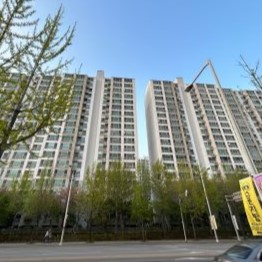
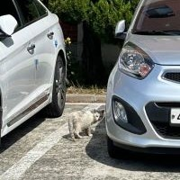
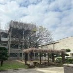
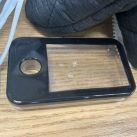
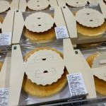

1.아파트

길에 있던 아파트를 찍었다. 빽빽하게 지어진 아파트가 인상적었다. 언뜻 봤었을 때 무수한 사각형이 나열되어 있는 듯한 느낌이 조금 징그럽기도 하면서 그런 인공물 특유의 각진 느낌에서 오는 안정감이 좋았다. 계속 보니 높게 솟은 아파트의 모양이 조금 무섭게 느껴질 정도이다.
2.거리의 화분들

길에 배치한 화분들을 찍었다. 옆에 꽃집이 같이 있었는데 거기서 가져다 놓은 것 같았다. 딱딱한 건물들 사이에 이런 식생들을 배치한 게 거리를 더운 화사하고 싱그럽게 만들어 준다. 나는 이런 건물과 식물의 조화를 매우 좋아한다.
3.고양이

우리 학교에서 봤던 고양이다. 다른 고양이보다 많이 꼬질꼬질하고 체구가 작아 놀랐다. 화단 수풀 쪽에 있었는데 나를 보니 달아나 버렸다. 그 순간에 찍은 사진인데 커다란 자동차와 그 사이에 있는 고양이의 대비가 고양이를 더 눈에 띄게 한다. 그래서 그런지 더 안쓰러워 보인다. 몸 상태가 좋지 않을까, 혹은 밥을 제대로 먹질 못하는 게 아닐까 하는 생각이 들 정도로 그 고양이가 걱정이 되었다.
4.낯선장소

학교에서 보게 된 장소이다. 어디인지 정확히 모르지만 분위가가 좋아서 찍었다. 퍼걸러에 자라나 있는 마른 풀들이 가장 마음에 든다. 건물의 배치도 ㄷ자형으로 되어있고 그 안에 나무들이 심어져 있는 형태라 아늑하고 보호받고 있는 공간이라는 느낌이 나서 좋았다.
5.틴케이스

미술학원에서 우연히 보게 된 틴케이스다. 뚜껑에 작은 구멍이 뚫려있고, 사각형으로 크게 투명으로 되어있다. 크기는 내 손바닥보다도 작았다. 처음 봤었을때 스마트폰같이 생겨서 재미있는 디자인이라고 생각했다. 실제로 이런 것을 의도한 것 인지 아니면 우연인지 모르겠지만 어떤 물건을 형상화하는 디자인도 재밌고 좋다고 생각한다.
6.고양이 피규어

같이 일하는 학원쌤 컴퓨터 옆에 있던 고양이 피규어다. 한 손에 쏙 들어오는 작은 크기로 눈을 감고 햇볕을 쬐는듯한 나른한 분위기를 풍기는 피규어이다. 식빵을 굽는듯한 고양이의 특징도 잘 담았고 귀여워서 나도 이런 작은 피규어 하나 정도 책상에 올려놓고 싶다고 생각했다.
7.치즈케이크

코스트코에 갔었을 때 진열되어 있는 치즈케이크를 찍은 사진이다. 화면에 꽉 차게 진열되어 있는 치즈케이크들을 보니 먹지 않았는데도 마음이 풍족해지고 든든해지는 기분이었다. 빼곡하게 진열되어 있는 모습을 보니 포장이 되어있는 박스의 형태가 패턴 같아 보이는 점이 재미있었다. 이 사진을 다시 보니 치즈케이크를 사지 않은 것이 조금 후회된다.
8.펭수인형

집에서 찾은 펭수 캐릭터 인형을 찍었다. 옛날에 선물 받았었던 것인데 좋아하는 캐릭터도 아니라서 금방 잊혀졌다가 오랜만에 보게 되었다. 지금 보니 캐릭터의 얼굴이 굉장히 묘하게 생겼다. 무슨 생각을 하는지 도무지 알 수 없는 동그란 눈과 도톰한 입, 그리고 헤드셋까지 간결한 디자인이면서 특징이 또렷하다고 생각했다. 생각보다 재미있는 디자인 이라고 생각했다.
9.가방

엄마께서 새로 산 가방이다. 처음 봤을때 디자인이 굉장히 귀엽다고 생각했다. 복슬복슬한 털질감에 재미있는 색조합이라서 실제로 보면 생각보다 더 귀엽다. 끈에 달려있는 아이보리색 파우치와 연보라색의 몸통 부분도 좋지만, 쨍한 초록색으로 분위기를 바꿔준 끈이 제일 좋았다. 그 부분이 언뜻 비슷한 색감인 파우치와 몸통 부분에 가장 큰 핵심이라고 생각한다.
10.소주잔

집에서 우연히 보게 된 소주잔을 찍은 사진이다. 가게에서 봤었던 소주잔하고 조금 다른 것 같은 느낌을 받았다. 전 외곽에 있는 기하학적인 무늬가 다이아몬드 같은 느낌을 주는 것 같아서 재미있는 형태다. 굴곡 그대로 만져지는 게 의외로 중독성이 있어서 계속 만지게 되었다.